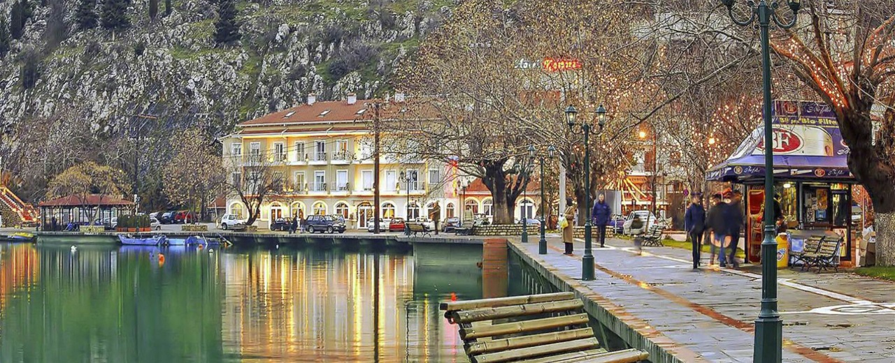

Πρέσπες Ο Δήμος Πρεσπών είναι δήμος της Περιφερειακής Ενότης της Φλώρινας της περιφέρειας Δυτικής Μακεδονίας που συστάθηκε με το Πρόγραμμα Καλλικράτης. Από τους σημαντικότερους υδροβιότοπους της Ευρώπης, οι Πρέσπες θεωρούνται ως ο επίγειος παράδεισος των μεταναστευτικών πουλιών και όχι μόνο. Εκατοντάδες είδη, πολλά μάλιστα υπό εξαφάνιση, φωλιάζουν και αναπαράγονται εδώ, ανάμεσα στα οποία ξεχωρίζουν οι αργυροπελεκάνοι, οι κορμοράνοι και οι ερωδιοί. Εφοδιαστείτε με το δικό σας κατάλληλο εξοπλισμό για παρατήρηση ή επισκεφθείτε το Παρατηρητήριο όπου μέλη της Ελληνικής Ορνιθολογικής Εταιρείας θα σας δώσουν πολύτιμες πληροφορίες για τα πουλιά και θα σας δανείσουν το τηλεσκόπιό τους για να τα παρατηρήσετε. Μην παραλείψετε να διασχίστε τη πλωτή γέφυρα που οδηγεί στο νησάκι του Αγίου Αχιλλείου στη Μικρή Πρέσπα, προκειμένου να θαυμάσετε τα ερείπια της ομώνυμης τρίκλιτης βασιλικής εκκλησίας που χρονολογείται από το 10ο αιώνα μ.Χ. Μοναδική εμπειρία αποτελεί και μια γνωριμία με τα πολλά ασκηταριά αλλά και τις βραχογραφίες στον όρμο των Ψαράδων και τις όχθες της Μεγάλης Πρέσπας.
